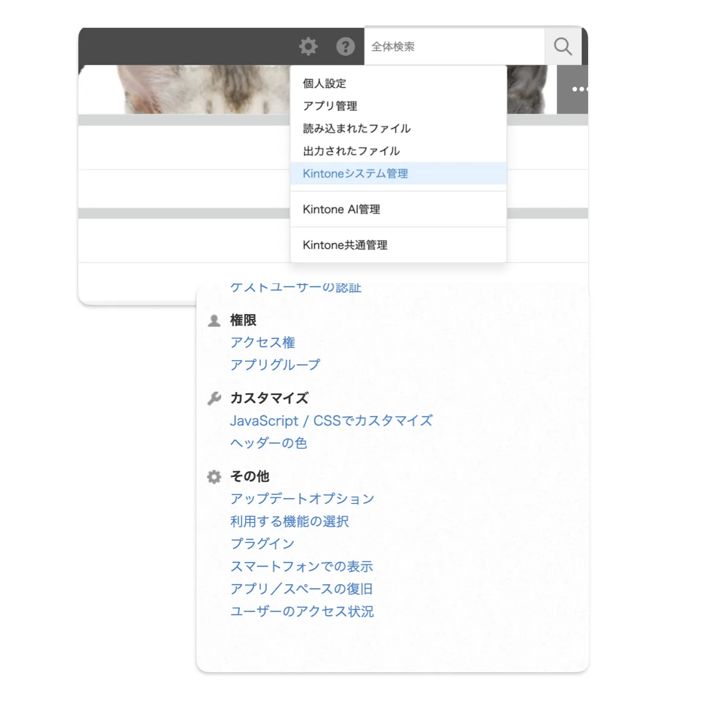
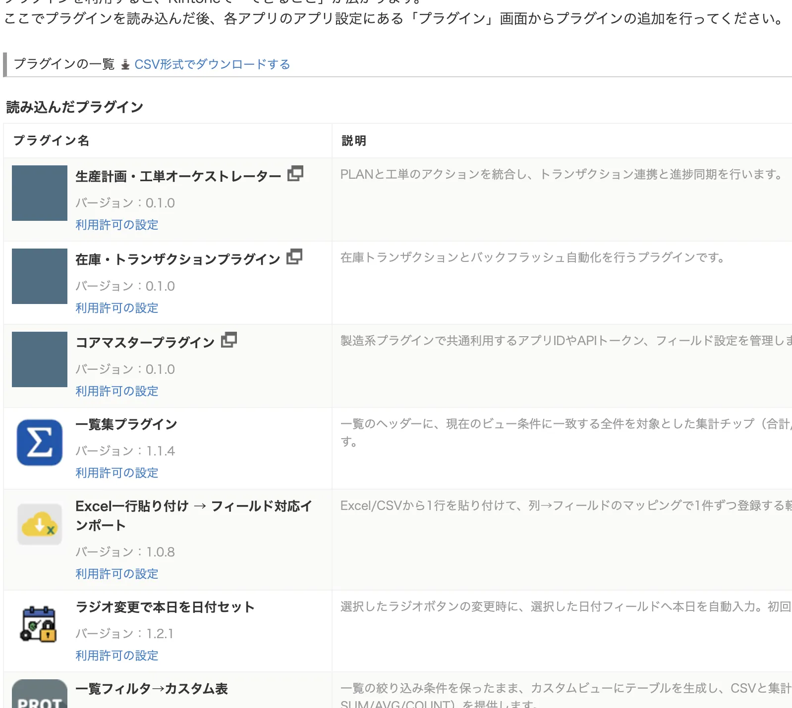
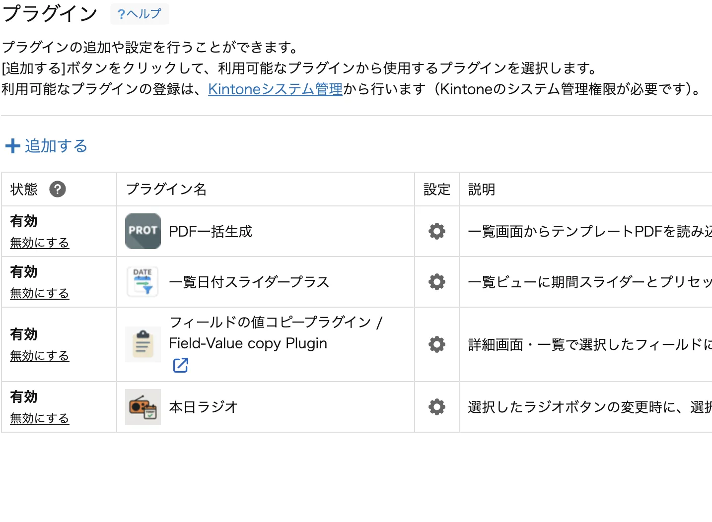

1. 導入前のチェックリスト
- 「システム管理」メニューにアクセスできる権限がありますか？
- テスト用アプリ（本番のコピーなど）を用意しましたか？
- ブラウザーは最新版ですか？（推奨：Google Chrome）
- 他プラグインと併用する場合は、事前にテストアプリで動作確認をしましょう。
ご注意： 追加や更新は本番へ影響する可能性があります。本番適用の前に必ずテストアプリで検証してください。
2. プラグイン配布物の確認
ダウンロードした ZIP 内に、少なくとも次のファイルが含まれていることを確認します。
- プラグイン本体（ZIP）：kintone にアップロードするファイル。解凍せずそのまま使用します。
- 導入ガイド（PDF）：社内共有向けの操作手順書（本ドキュメント）。
ヒント：Windows は ZIP を右クリック→「すべて展開」、Mac はダブルクリックで展開できます（※プラグイン本体 ZIP は展開しません）。
やってはいけない例： ZIP を展開してアップロードすると読み込めません。必ず ZIP のまま読み込んでください。
3. kintone へのプラグイン追加（システム管理）
-
システム管理を開く
画面右上のアカウントメニューから「システム管理」（または「管理者設定」）を選択します。
 ① システム管理を開く -
プラグイン管理画面へ
左メニューで「カスタマイズ／サービス連携」→「プラグイン」を開き、左上の「読み込む」→「参照」をクリックします。
-
プラグイン ZIP を選択
配布された ZIP を選び「読み込む」をクリック。アップロード後、一覧に表示されます。
 ② ZIP のまま読み込む -
有効化の準備
ステータスが「利用可能」になっていることを確認。アプリ適用は次の章で行います。
4. アプリで設定＆有効化（アプリ管理）
-
対象アプリを開く
アプリの設定（歯車）→「プラグイン」→「+ プラグインを追加」をクリックします。
-
プラグインの設定
一覧から対象を選び「設定」をクリック。案内に沿って入力し、保存します。
 ③ 設定を保存 -
アプリを保存して公開
設定保存後、画面右上の「保存」→黄色の「アプリを更新」を押します。これで有効になります。
-
動作確認
アプリ画面で想定どおりに動くかを確認。うまくいかない場合は、設定や他プラグインの影響を確認し、次章も参照してください。
5. プラグインのアップデート
- 配布サイトから最新版のプラグイン本体（ZIP）とガイドをダウンロードします。
- アカウントメニュー→「システム管理」（または「管理者設定」）を選びます。
- 「カスタマイズ／サービス連携」→「プラグイン」→「読み込む」→「参照」。
- ZIP を選び「読み込む」。アップロード完了後、最新版に更新されます。
- 必要に応じて変更点をアプリ利用者へ共有してください。
- 旧バージョンの ZIP は保管しておくと、万一のロールバック時に安心です。
6. トラブルシュート
画面が真っ白／動かない
- ブラウザー再読み込み（Ctrl + F5 / Cmd + Shift + R）。
- 他のプラグインを一時的にOFF → 影響を切り分け。
- 設定値の抜けや誤りがないか確認。
アップデート後にエラー
- 「保存 → アプリを更新」を実施したか確認。
- アプリのカスタマイズ（JavaScript / CSS）を一時的にOFF。
- エラーメッセージはスクショを撮り、サポートへ。
7. サポート窓口
お問い合わせ時のチェック
- プラグイン名とバージョン
- 発生日時・操作手順
- エラーメッセージ／スクリーンショット
- kintone ドメイン（例：example.cybozu.com）
連絡先
ご購入時にご案内したメールアドレス / フォームまでご連絡ください。
受付：平日 10:00–18:00（日本時間）※祝日・弊社指定休日を除く